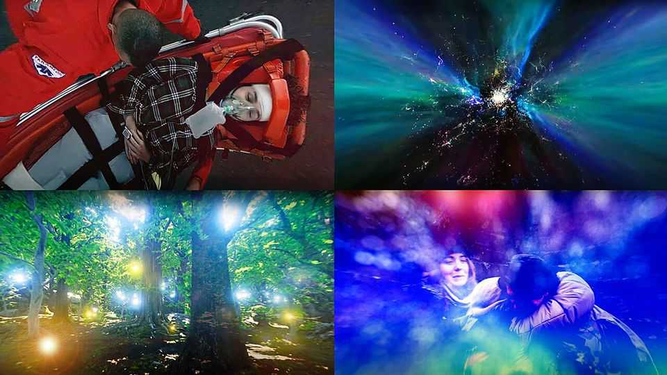

Simulating death can reduce people’s fear of dying
And help doctors train for the worst

Oct 1st 2026
Death has always had a marketing problem. The debilitating terror it induces has been linked to everything from money hoarding to workaholism. And worrying about death—thanatophobia for the pub quizzers—can even be self-fulfilling. Anxiety can double the risk of death in patients with heart disease and cause others to avoid screening tests most likely to catch cancer early.
So all credit to the brave folk in Australia who signed up for a quick practice kick of the bucket—experiencing a cardiac arrest and out-of-body journey in virtual reality (VR). The ten-minute VR experience, “Passing Electrical Storms” by Shaun Gladwell, was shown at the National Gallery of Victoria in 2023. Visitors lay on a bed that initially vibrated with their heartbeat, while wearing a VR headset showing them on a table in the gallery. The simulation then takes over: as their heart rate seemingly crashes, the volunteers watch doctors try and fail to resuscitate them. After brain death, they then see themselves leave their body and appear to float through the universe before shrinking inside cells and atoms. Six large fans provide the associated cooling effects.
Participants’ reactions to the experience were analysed by researchers before being published in a journal in June. Most participants found it a pleasant trip, and many emerged less anxious about death. “If death is as simple as that, I’d be very happy,” a volunteer told the research team, led by Stefan Greuter, a design technologist at Australia’s RMIT University. Another compared the experience to yoga. One participant, brought up to believe in hell, admitted to being relieved.
A separate study in Texas, published in Frontiers in Virtual Reality, tested an 11-minute VR simulation of a near-death experience. In this case the student volunteers survived, but only after watching themselves undergo a car crash, coma, tunnels of light, serene landscapes and imagined encounters with friends and family. Reported death anxiety among participants dropped by an average 18%. “Very relaxing. I wish I could try it more than once. Maybe every night before going to bed,” one participant said. Running the test again with those who are frail, elderly or terminally ill could produce a stronger response, the researchers say. A glimpse of mortality did not, however, help everyone: a quarter of the student volunteers said the VR experience made them more anxious about death, and a third emerged more stressed.
Most people fear their own deaths. Surgeons and doctors also worry about others dying under their care. This, too, can be simulated: a report in the Journal of Surgical Education from January describes a “protocol deviation” during a clinical simulation exercise with medical students at the University of Wisconsin, in which a rogue supervisor went off-script and simulated killing the practice patient. The monitor flatlined. The students, who had been calmly preparing the patient for bowel surgery, were not forewarned—as their reactions attest. “Oh my God. I’m going to kill someone. They should not graduate me. I am literally having a panic attack,” one said during a debrief session.
Interventions such as these could have some benefit, the researchers say. Many doctors will lose patients. Learning to process the emotional weight in a controlled situation, before it happens in a real operating theatre, may be something that more medical schools should offer students. ■